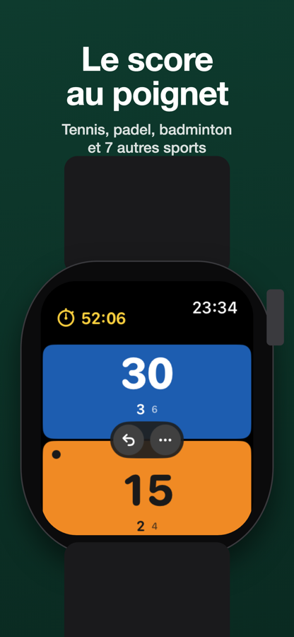
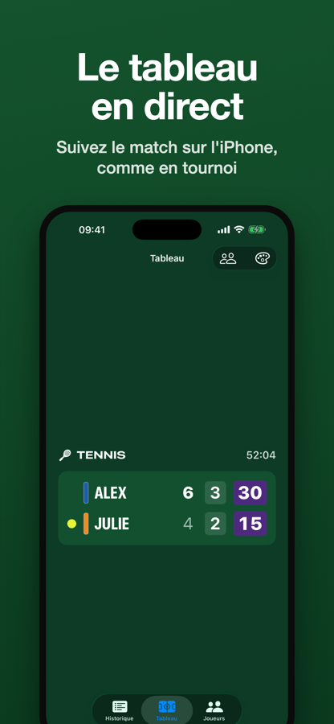

Le score au poignet.
Easy Score transforme votre Apple Watch en compteur de points simple pour vos matchs entre amis. L'écran est coupé en deux couleurs : appuyez sur votre côté pour gagner le point. Jeux, sets et tie-breaks sont comptés pour vous.


Sports
- Tennis
- Padel
- Badminton
- Ping-pong
- Squash
- Pickleball
- Volley-ball
- Beach-volley
- Pétanque
- Compteur libre
En bref
- Appui maintenu court pour marquer, couronne pour annuler, vibrations distinctes pour les jeux, les sets et les changements de côté.
- Règles officielles intégrées : point décisif, tie-break en 7 ou 10, super tie-break, « Match ouvert » ou au meilleur de 1, 3 ou 5 sets.
- Écran allumé pendant tout le match, séance enregistrée dans Santé si vous le souhaitez.
- Sur l'iPhone : comptage sans montre, tableau de score en direct façon tournoi, historique, bilans face à chaque adversaire, image du score à partager, synchronisation iCloud.
- Pas de compte, pas de publicité, aucun pistage. Un seul achat, pas d'abonnement.
Disponible sur l'App Store pour iPhone et Apple Watch (iOS 17 et watchOS 10 ou plus récents).